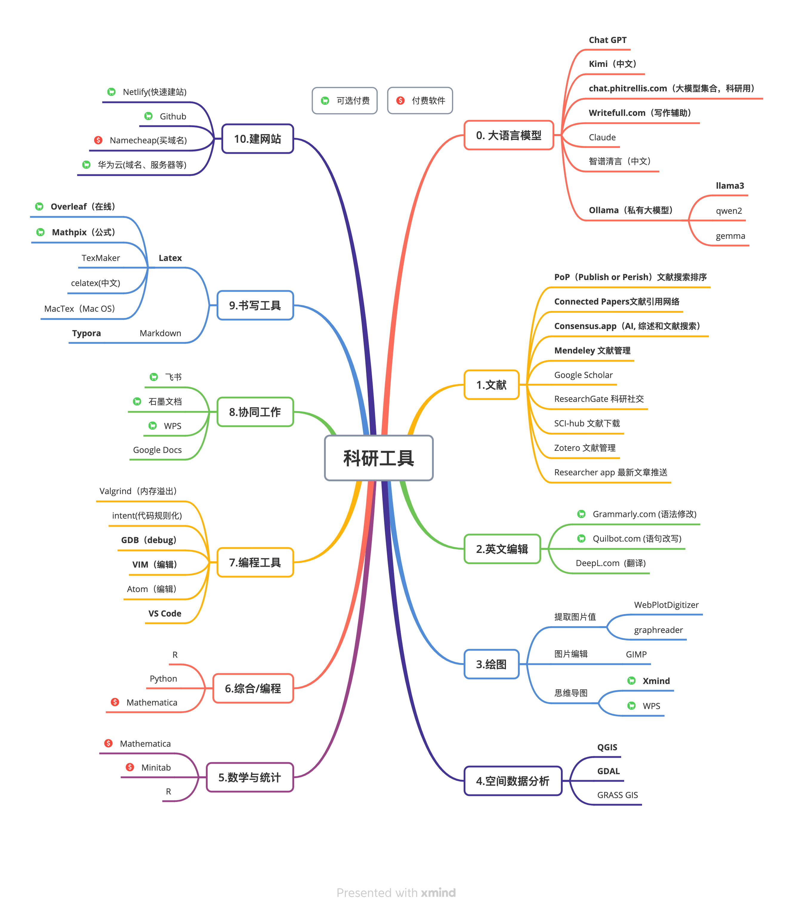

Chapter 7 科研工具
推荐使用的科研软件请先查看下面这张图。绝大部分为免费软件，个别是收费软件。 
7.1 空间制图
7.1.1 QGIS
QGIS是一款免费、开源的地理信息系统（GIS）软件，相对于其他商业GIS软件，它有以下几个优势：
- 免费：QGIS是一款完全免费的GIS软件，用户可以自由地下载、使用和修改它。
- 开源：QGIS是一个开源软件，这意味着用户可以随意查看其源代码、修改和扩展其功能，同时也可以通过用户社区获得技术支持。
- 跨平台：QGIS可以在Windows、MacOS、Linux等多个操作系统上运行，并提供相应的安装程序和二进制文件。
- 多功能：QGIS具有很多功能，包括地图制作、数据处理、空间分析、地理编码和地理数据编辑等。它支持许多不同的文件格式，包括ESRI shapefile、MapInfo文件、PostGIS和Oracle空间数据库、GeoTIFF和其他栅格数据格式等。
- 易于使用：QGIS提供了易于使用的用户界面，包括地图绘制、数据导入和空间分析等功能。此外，用户可以通过插件来扩展软件的功能，满足不同的需求。
- 社区支持：QGIS有一个活跃的用户社区，用户可以通过该社区获得技术支持、交流使用经验和分享资源等。
综上所述，QGIS是一款免费、开源、跨平台、功能丰富、易于使用且有着强大的社区支持的GIS软件。它是许多研究人员、学生和行业专业人士的首选工具之一。
下载地址：https://www.qgis.org/en/site/forusers/download.html
7.2 绘图
7.2.1 XMind
XMind 是一款流行的思维导图软件，它帮助用户通过可视化的方式进行思维整理和知识管理。支持多种导图类型，界面友好，操作简单，且具有丰富的样式和主题，用户可以根据需要选择适合自己的导图方式和风格。此外，XMind 还支持多种文件格式，如 PDF、Excel、Word 等，方便用户进行跨平台工作和分享。。
下载地址：https://xmind.cn/download/
7.3 文献
7.3.1 Mendeley Desktop
Mendeley Desktop 是一款强大的文献管理软件，它帮助用户组织、整理和分享学术文献。其优势包括：支持文献的快速检索、全文搜索，以及跨平台同步；提供丰富的文献管理功能，如文献分类、标签管理、引用格式自动生成等；支持文献协作和共享，可以与同行合作整理文献，共同撰写文章。
下载地址：https://www.mendeley.com/download-reference-manager
7.3.2 Consensus.app
Consensus.app 是一个利用人工智能技术驱动的科研搜索引擎，它的核心价值在于帮助研究人员高效地查找、总结和理解大量的科学研究论文。Consensus.app 能够针对用户提出的问题，综合多篇研究论文的内容，提供一个基于研究证据的共识性回答，这对于科研工作者在进行文献综述、寻找支持自己研究假设的证据时非常有用。此外，Consensus.app 还提供了一个便捷的方式来引用相关论文，确保了答案的真实性和可靠性，从而在学术研究中发挥了重要作用。
7.3.3 Researcher App
Researcher App 是一个移动应用程序，旨在为研究人员提供一个便捷的方式来访问和管理科学文献。它允许用户快速搜索学术文章，阅读摘要，管理自己的引用和阅读列表，以及同步图书馆资料。Researcher App 的优势在于其用户友好的界面和实用的功能，如离线阅读、文献分享和跨平台同步，这些功能都有助于提高研究人员的工作效率。
访问地址：https://www.researcher-app.com
7.3.4 Publish or Perish (PoP)
Publish or Perish (PoP) 是一款广受学术界欢迎的科研评价工具，由Google工程师Timothy original所开发。该软件的宗旨是帮助科研工作者更有效地管理和评估他们的学术成果。Publish or Perish的主要功能包括：
- 学术成果分析：它可以分析学者在Google Scholar上的引用情况，提供关于其研究成果的即时反馈。
- 引用排名：PoP能够显示个人或机构的引用排名，以及他们在特定学科领域的表现。
- 趋势分析：通过分析引用数据，PoP可以帮助用户了解特定研究主题或领域的趋势和动向。
- 成果比较：用户可以比较不同研究者或论文的引用情况，从而对学术成就进行量化评估。 尽管Publish or Perish是一个免费软件，但用户需要意识到，它所依赖的数据源——Google Scholar——可能会受到搜索引擎算法更新的影响，从而影响评价结果的准确性和时效性。因此，虽然PoP是一个有用的工具，但它应该与其他评价方法结合使用，以获得更全面的学术评价。
7.4 AI大语言模型
7.4.1 AI及ChatGPT
当从事科学研究时，使用AI或大语言模型（LLM）可以作为辅助工具提供帮助和灵感。 但以下是一些建议：
- 准备好问题：确保你有清晰的问题或概念，以便从LLM中获得有用的回答。明确你想要什么样的帮助，这样LLM才能更好地回应你的需求。
- **验证信息：LLM提供的答案可能不总是准确或可靠的，所以记得验证这些信息。进行进一步的研究和检查，确保你得到的结果是可信的。
- 适度使用：LLM是一个很有用的工具，但也有一些局限。明确LLM的作用，将其作为辅助手段，而不是替代你自己的研究工作。
- 避免偏见：LLM模型的训练数据是从互联网上收集的，这可能包含了偏见或不准确的信息。所以在使用LLM的结果时，要保持谨慎，注意避免偏见。
- 不断训练改进：利用LLM与其他研究人员进行交流，共享反馈和经验，这样可以帮助改进和训练LLM，提高它在科研任务中的效果。
需要注意的是，尽管LLM可以为科学研究提供一些有价值的帮助，但它仍然是一个语言模型，并不能替代严格的实验设计和科学方法。将LLM作为辅助工具，与自己的专业知识和判断相结合，才能更好地实现科研任务的目标。
7.4.4 私有部署
ollama： https://ollama.ai。 Ollama 是一个开源的大型语言模型服务工具，它提供了类似 OpenAI 的 API 接口和聊天界面，使得用户能够方便地部署和使用最新版本的 GPT 模型
llama2 https://github.com/facebookresearch/llama Llama2 是由 Meta 公司开发的开源大语言模型，它在多个基准测试上取得了超越现有开源模型的成绩，具有优秀的多轮对话能力和安全性。
ChatGLM3 https://github.com/THUDM/ChatGLM3。ChatGLM3 是由智谱 AI 公司和清华大学 KEG 实验室联合发布的新一代对话预训练模型。它是基于 GLM-3 模型开发的，具有出色的多轮对话能力和良好的上下文理解能力。ChatGLM3 模型在多种场景下都表现出了优秀的性能，例如客服、教育、娱乐等。它还支持多种语言的交互，能够满足不同用户的需求。
通义千问(Qwen) https://github.com/QwenLM/Qwen。通义千问(Qwen)是阿里巴巴开源的大型语言模型，旨在实现通用人工智能（AGI），具备强大的语言处理能力和多模态交互能力，适用于多种下游任务和领域。
7.5 远程登录和数据传输
7.5.1 ssh远程登录
ssh是默认的远程服务器访问软件，小巧、安全、快速。 命令一般执行方式如下：
ssh [username@remotehost]第一次登录要求在本地保存登陆指纹,输入y确认。然后屏幕提示输入远程的登录密码。
其他登录参数：
- -p 22 - 采用22端口登录。ssh的默认端口是22。
- -Y - 启用远程GUI
- -i \[file\] - 使用指定的登录密钥
Windows平台登录时可使用PowerShell；但是Windows平台推荐使用MobaXTerm软件。
在Linux或者mac平台可以直接使用terminal命令行；Mac平台也推荐使用iTerm2，可以使用多开方式。
ssh同时支持文件传输，例如sshfs和sftp。 快速的文件传输和查看，在Mac和Linux平台，可以使用CyberDuck； Windows平台推荐使用WinSCP。
7.5.2 免密码登录
执行ssh-keygen，可在客户端生成用户密码，生成的用户密码可于免密码的SSH登录。
ssh-keygen然后执行查看命令，查看密码申请状况。
ls ~/.ssh/
cat ~/.ssh/id_rsa将本地生成的密钥拷贝到远程服务器上,此处需要输入登陆远程服务器的密码。
ssh-copy-id [username@remotehost]如果远程服务器端口为32099，则命令改为：
ssh-copy-id -p 32099 [username@remotehost]成功之后，可以SSH免密方式登陆远程服务器。
ssh -i ~/.ssh/id_rsa [username@remotehost]如端口变为32099，则命令为：
ssh -p 32099 -i ~/.ssh/id_rsa [username@remotehost]7.5.3 wget批量下载数据
关于批量下载数据，请参考博客文章： https://www.shulele.net/zh/eosdata/。
7.6 Linux操作系统
7.6.1 用户名管理
新建用户userx
sudo useradd -s /bin/bash -d /home/userx/ -m -G sudo userx/bin/bash 是用户默认的登录shell界面。 /home/userx/ 使用户的Home目录位置。 -G sudo 是指定用户的所属的组。sudo组用户则在输入sudo命令时的具有root权限。
登录指定用户userx
su userx7.6.2 Linux常用的命令。
部分命令的默认Ubuntu系统中不存在时，需要使用apt安装。
- 安装软件apt：
sudo apt install tree - man：使用man ls则可以查看ls命令的使用说明；man命令组合可以看所有命令的说明。
- cd：切换不同的目录
- ls：查看目录和文件
- cat：在屏幕打印出文本文件
- more, head, tail，查看文本文件
- tree 查看目录树结构
- ip a： 查看服务器IP信息
- lsblk：查看硬件设备
- df：查看磁盘设备挂载情况
- du：查看磁盘使用率
- jobs ：查看后台运行的用户程序
- ps：查看进程
- kill： 杀死/关闭某一个进程
- scp：通过ssh通道拷贝数据
- rsync：使用数据更新方式拷贝数据，支持本地数据拷贝或者远程ssh数据拷贝。
- wget/curl：数据下载
- mount/umount：挂载和卸载磁盘。
- grep正则表达式：用于查找文件里符合条件的字符串。
- find：用于查找目录中的文件
7.7 R
R是高效且灵活的编程语言，可以高效的完成数据读写、统计分析、空间数据处理处理、并行计算等任务。
R语言是一种免费的、开源的数据分析和统计建模语言，相对于其他统计分析软件，R语言有以下显著优势：
免费且开源：R语言是一款完全免费、开源的软件，用户可以自由地下载、使用和修改它。这使得R语言成为许多研究人员、学生和行业专业人士的首选工具之一。
强大的统计分析能力：R语言提供了许多统计分析和建模的方法，包括线性回归、非线性回归、时间序列分析、聚类分析、因子分析和机器学习等。R语言还提供了许多常用的数据处理和可视化工具，如数据清洗、数据可视化和报告生成等。
社区支持：R语言拥有一个庞大的用户社区，用户可以通过该社区获得技术支持、交流使用经验和分享资源等。R语言社区提供了大量的免费学习资源，包括教程、示例代码和数据集等。
可扩展性：R语言可以通过许多扩展包（packages）来扩展其功能。这些扩展包提供了各种各样的功能，从数据可视化到高级统计分析和机器学习。
易于学习和使用：R语言拥有易于学习和使用的语法和语言结构，许多人认为R语言比其他统计分析软件更加容易学习和使用。
跨平台支持：R语言可以在Windows、MacOS、Linux等多个操作系统上运行，并提供相应的安装程序和二进制文件。
本研究组的rSHUD(https://github.com/shud-System/rshud), AutoSHUD(https://github.com/shud-System/autoshud)和全球数据云平台(https://ghdc.ac.cn)都由R语言实现。
具体的R语言教程请参考《R在地球科学中的应用》https://www.shud.xyz/bookr/。
7.7.1 Rstudio Server
Rstudio Server服务入口，请使用超算的账户登录。
- SHUDHPC： https://rstudio.shud.vip 或者 http://210.77.77.22:8787
Rstudio Server的使用手册：https://s3.amazonaws.com/rstudio-server/rstudio-server-pro-0.98.507-admin-guide.pdf
7.8 Python {#python}
SHUD-HPC的Python入口：https://py.shud.vip